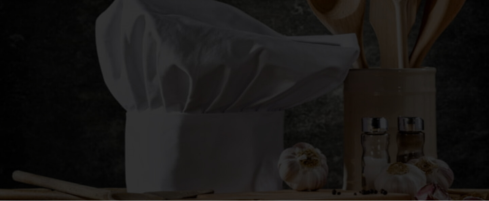

A Companhia de Entrepostos e Armazéns Gerais do Estado de São Paulo (CEAGESP) merece um capítulo especial. Ele é parte fundamental no crescimento e desenvolvimento da região.
Sua construção em 1969, oriunda da fusão entre o Centro Estadual de Abastecimento (CEASA) e a Companhia de Armazéns Gerais do Estado de São Paulo (CAGESP), ambas mantidas pelo Estado de São Paulo, acelerou e impulsionou o desenvolvimento econômico da região.
A instituição, como é até hoje, representa parte significativa do comércio e economia do estado. Sua instauração foi capaz de aumentar a visibilidade da região levando trabalhadores e empresários a investir nos arredores.
A empresa está vinculada ao Ministério da Economia. Ela faz a armazenagem e abastecimento de produtos agrícolas do estado e permite a produção no campo vinda de muitas regiões do país, além da importação e exportação.
O Ceagesp detém a maior rede pública de armazéns que recebe produtos agrícolas e a granel do Estado de São Paulo.
Além disso, é também o maior centro de abastecimento de pescados, verduras, legumes, flores e frutas da América Latina e o terceiro centro de comercialização atacadista de perecíveis do mundo, atrás apenas dos de Paris e de Nova York.
Quando o assunto é gastronomia, a Vila Leopoldina oferece as mais variadas opções de serviços.
Por lá, mais de 100 comércios com a temática funcionam diariamente para atender os mais de 40 mil moradores do bairro, sob a administração da subprefeitura da Lapa.
Com os mais diversos restaurantes, a Vila Leopoldina conquista os paladares com uma vasta cartilha de culinária que preenche todos os gostos.
A culinária italiana é um dos maiores destaques. O autêntico Mamaggiore se sobressai pela identidade inigualável de sua “cucina” italiana contemporânea com a proposta de resgatar o prazer em comer bem.
Localizado na Rua Carlos Weber, 594, o ambiente que conta com o brilho de obras e pinturas temáticas dispostas nas paredes oferece aos apreciadores o aconchego digno das vilas italianas. Aprecie a gastronomia típica e desfrute de um cardápio recheado.
No entanto, se o que você procura for uma boa hamburgueria, a Criminal Burguer chegou à região em 2016 e desde então faz sucesso com os moradores e colaboradores.
O ambiente jovem e descontraído é ideal para encontros entre os amigos que curtem a tendência do hambúrguer artesanal. Você ainda pode se deliciar com as sobremesas. Destaque para o bolinho de chuva com recheio de Negresco.
Para acompanhar, o chopp gelado é sempre uma boa pedida. A unidade da Vila Leopoldina está sediada na Rua Nanuque, 595.
Como se não bastassem essas opções, não podemos nos esquecer que na Gastão Vidigal, número 1946, está o CEAGESP. O entreposto que movimenta 250 mil toneladas de frutas, legumes, verduras, pescados e flores todos os dias.
Uma tradição do local é o festival de sopas, que ocorre todos os anos durante o inverno. A sopa de cebola é uma das mais populares entre os paulistanos, vale a pena conferir.
Se você procura um bar para um happy hour com os amigos, ou para uma comemoração especial nos finais de semana, a Vila Leopoldina também oferece opções.
Outra opção consagrada na região é o popular Boteco Mandinga. O bar oferece o happy hour com Chopp Brahma e Stella Artois e música ao vivo todas as quintas, sextas e sábados e é um dos mais conhecidos pontos de encontro dos colaboradores da Vila Leopoldina.
O Boteco Mandinga está na Rua Carlos Weber, altura do número 64 e aceita reservas.